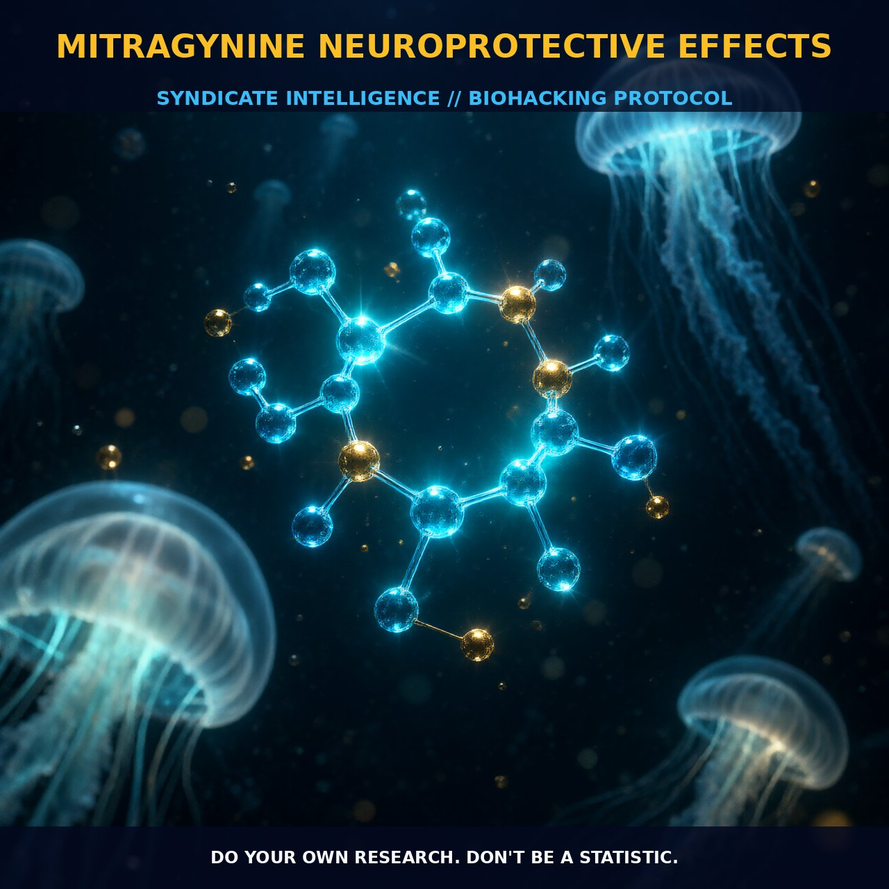

Mitragynine Neuroprotective Effects

1. The Mechanism
Mitragynine, the primary indole alkaloid found in Mitragyna speciosa, exhibits a diverse array of neuroprotective effects. Its pharmacological activities are predominantly mediated through interactions with opioid receptors, neuronal Ca2+ channels, and the modulation of cyclic adenosine monophosphate (cAMP) signaling pathways.
Research has shown that mitragynine has a high affinity for opioid receptors such as the μ (mu), δ (delta), and κ (kappa) receptors, suggesting its role in modulating central opioidergic pathways. Additionally, it has been demonstrated to block neuronal Ca2+ channels, which plays a pivotal role in inhibiting neurotransmitter release from nerve endings. This action is believed to contribute to the overall neuroprotective effects of mitragynine by reducing excitotoxicity, a common mechanism underlying neuronal damage in various neurodegenerative conditions.
Furthermore, mitragynine has been found to inhibit forskolin-stimulated cAMP formation, a process critical for cellular signaling and synaptic plasticity. This inhibition is believed to be mediated through opioid receptors, as it can be blocked by naloxone, an opioid receptor antagonist. This suggests that mitragynine’s neuroprotective effects may also involve the modulation of intracellular signaling pathways that are critical for neuronal health and function.
Mitragynine has also been shown to enhance hippocampal synaptic plasticity by modulating glutamatergic neurotransmission through AMPA and NMDA receptors, thereby supporting its role in neuroprotective processes.
2. Biological Leverage
Mitragynine exerts its neuroprotective effects through multiple pathways that collectively support neuronal integrity and function. By modulating opioid receptors, mitragynine can influence the release and reuptake of neurotransmitters such as dopamine, serotonin, and noradrenaline. These neurotransmitters play a crucial role in synaptic transmission and neuronal communication, and their modulation can contribute to the mitigation of neurodegenerative processes.
The inhibition of neuronal Ca2+ channels further supports this effect by reducing excitotoxicity, a condition where excessive Ca2+ influx leads to neuronal damage and death. Moreover, the ability of mitragynine to inhibit forskolin-stimulated cAMP formation highlights its potential to modulate cellular signaling pathways that are critical for neuronal health.
This modulation can influence downstream targets such as protein kinase A (PKA) and cyclic nucleotide-gated ion channels, which are involved in a range of cellular processes including gene expression and synaptic plasticity. This can help to stabilize neuronal function and enhance the resilience of neurons to stress and injury.
The enhancement of synaptic plasticity through AMPA and NMDA receptors suggests that mitragynine can support the formation and maintenance of neural connections, which is essential for cognitive function and neuroprotection.
3. Tactical Implementation
When implementing mitragynine for neuroprotective purposes, it is crucial to consider the optimal dosage and timing to achieve the desired effects. Human dosing of mitragynine is not well established, but typically ranges from 500 to 1500 mg. Starting with lower doses and gradually increasing can help to gauge individual tolerance and efficacy.
Mitragynine’s half-life is approximately 23 hours, allowing for its accumulation in the body with regular dosing. This prolonged presence can support sustained neuroprotective effects over time. Stacking mitragynine with other compounds can enhance its neuroprotective potential. For instance, combining mitragynine with nootropics that support synaptic plasticity, such as piracetam or aniracetam, can synergistically promote cognitive function and neuronal health.
Incorporating antioxidants like alpha-lipoic acid or N-acetyl cysteine can help to mitigate oxidative stress, a common contributor to neuronal damage. Ensuring a balanced diet rich in omega-3 fatty acids, particularly DHA, can also support neuronal health and complement the effects of mitragynine.
Prostar Life Hack
Start with a lower dose of mitragynine (500 mg) and gradually increase to find your optimal dosage. Combine mitragynine with nootropics like piracetam or aniracetam for enhanced cognitive benefits and include antioxidants such as alpha-lipoic acid or N-acetyl cysteine to support neuronal health.
[ AUTHOR: LEAD TECHNICAL RESEARCHER ]